2023 Higher Mathematics - Paper 1 marking instructions
Source: Scottish Qualifications Authority (SQA) / Qualifications Scotland. This is a StemInteract HTML companion, not an official HTML edition. Selectable text is supplied alongside original page images. Use the images or original PDF for equations, powers, fractions, vector notation, tables and diagrams; text extraction cannot fully preserve mathematical layout.
Jump to a question
PDF page 1
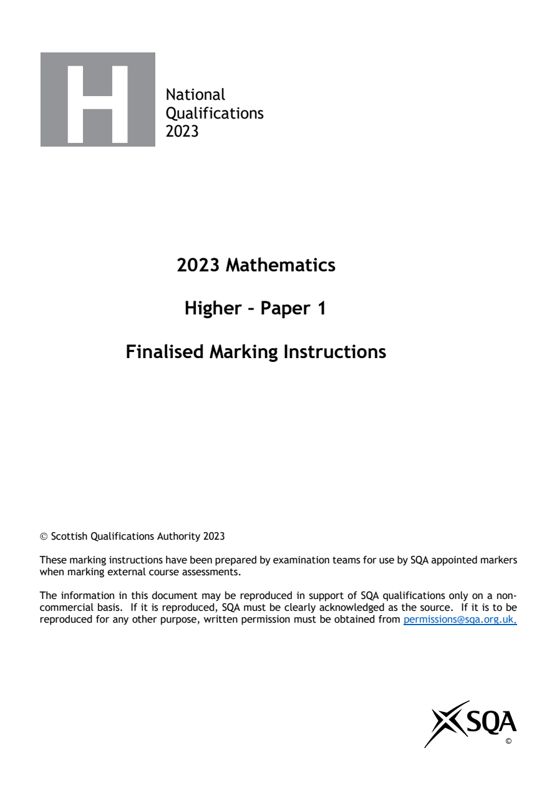
Selectable page text
National
Qualifications
2023
2023 Mathematics
Higher – Paper 1
Finalised Marking Instructions
Scottish Qualifications Authority 2023
These marking instructions have been prepared by examination teams for use by SQA appointed markers
when marking external course assessments.
The information in this document may be reproduced in support of SQA qualifications only on a non-
commercial basis. If it is reproduced, SQA must be clearly acknowledged as the source. If it is to be
reproduced for any other purpose, written permission must be obtained from permissions@sqa.org.uk.
©PDF page 2
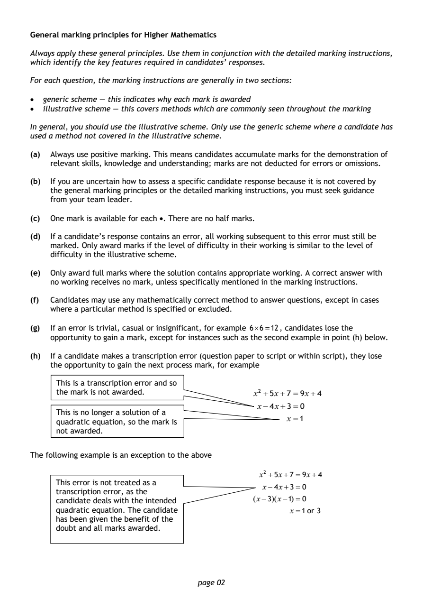
Selectable page text
General marking principles for Higher Mathematics
Always apply these general principles. Use them in conjunction with the detailed marking instructions,
which identify the key features required in candidates’ responses.
For each question, the marking instructions are generally in two sections:
• generic scheme — this indicates why each mark is awarded
• illustrative scheme — this covers methods which are commonly seen throughout the marking
In general, you should use the illustrative scheme. Only use the generic scheme where a candidate has
used a method not covered in the illustrative scheme.
(a) Always use positive marking. This means candidates accumulate marks for the demonstration of
relevant skills, knowledge and understanding; marks are not deducted for errors or omissions.
(b) If you are uncertain how to assess a specific candidate response because it is not covered by
the general marking principles or the detailed marking instructions, you must seek guidance
from your team leader.
(c) One mark is available for each •. There are no half marks.
(d) If a candidate’s response contains an error, all working subsequent to this error must still be
marked. Only award marks if the level of difficulty in their working is similar to the level of
difficulty in the illustrative scheme.
(e) Only award full marks where the solution contains appropriate working. A correct answer with
no working receives no mark, unless specifically mentioned in the marking instructions.
(f) Candidates may use any mathematically correct method to answer questions, except in cases
where a particular method is specified or excluded.
(g) If an error is trivial, casual or insignificant, for example 6×6=12, candidates lose the
opportunity to gain a mark, except for instances such as the second example in point (h) below.
(h) If a candidate makes a transcription error (question paper to script or within script), they lose
the opportunity to gain the next process mark, for example
This is a transcription error and so
the mark is not awarded. x² +5x+7 =9x+4
x−4x+3=0
This is no longer a solution of a
x =1
quadratic equation, so the mark is
not awarded.
The following example is an exception to the above
x² +5x+7 =9x+4
This error is not treated as a
x−4x+3=0
transcription error, as the
candidate deals with the intended
(x−3)(x−1)=0
quadratic equation. The candidate x=1 or 3
has been given the benefit of the
doubt and all marks awarded.
page 02PDF page 3
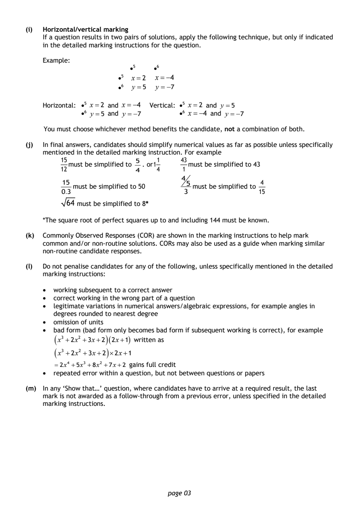
Selectable page text
(i) Horizontal/vertical marking
If a question results in two pairs of solutions, apply the following technique, but only if indicated
in the detailed marking instructions for the question.
Example:
•5 •6
•5 x=2 x=−4
•6 y =5 y =−7
Horizontal: •5 x=2 and x=−4 Vertical: •⁵ x=2 and y =5
•6 y =5 and y =−7 •6 x=−4 and y =−7
You must choose whichever method benefits the candidate, not a combination of both.
(j) In final answers, candidates should simplify numerical values as far as possible unless specifically
mentioned in the detailed marking instruction. For example
15 5 1 43
must be simplified to . or1 must be simplified to 43
12 4 4 1
4
15 5 4
must be simplified to 50 must be simplified to
0.3 3 15
64 must be simplified to 8*
*The square root of perfect squares up to and including 144 must be known.
(k) Commonly Observed Responses (COR) are shown in the marking instructions to help mark
common and/or non-routine solutions. CORs may also be used as a guide when marking similar
non-routine candidate responses.
(l) Do not penalise candidates for any of the following, unless specifically mentioned in the detailed
marking instructions:
• working subsequent to a correct answer
• correct working in the wrong part of a question
• legitimate variations in numerical answers/algebraic expressions, for example angles in
degrees rounded to nearest degree
• omission of units
• bad form (bad form only becomes bad form if subsequent working is correct), for example
( x³ +2x² +3x+2 )( 2x+1 ) written as
( )
x³ +2x² +3x+2 ×2x+1
=2x⁴ +5x³ +8x² +7x+2 gains full credit
• repeated error within a question, but not between questions or papers
(m) In any ‘Show that…’ question, where candidates have to arrive at a required result, the last
mark is not awarded as a follow-through from a previous error, unless specified in the detailed
marking instructions.
page 03PDF page 4
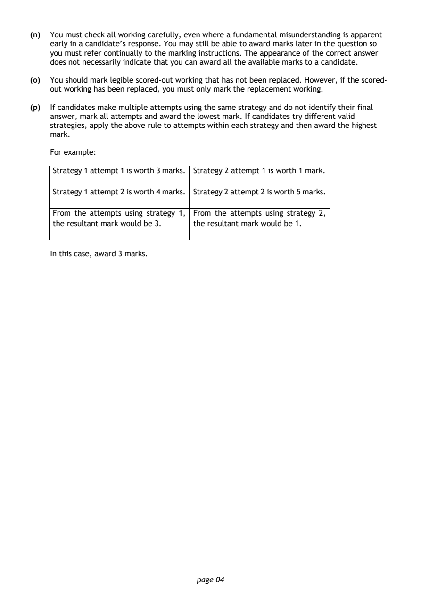
Selectable page text
(n) You must check all working carefully, even where a fundamental misunderstanding is apparent
early in a candidate’s response. You may still be able to award marks later in the question so
you must refer continually to the marking instructions. The appearance of the correct answer
does not necessarily indicate that you can award all the available marks to a candidate.
(o) You should mark legible scored-out working that has not been replaced. However, if the scored-
out working has been replaced, you must only mark the replacement working.
(p) If candidates make multiple attempts using the same strategy and do not identify their final
answer, mark all attempts and award the lowest mark. If candidates try different valid
strategies, apply the above rule to attempts within each strategy and then award the highest
mark.
For example:
Strategy 1 attempt 1 is worth 3 marks. Strategy 2 attempt 1 is worth 1 mark.
Strategy 1 attempt 2 is worth 4 marks. Strategy 2 attempt 2 is worth 5 marks.
From the attempts using strategy 1, From the attempts using strategy 2,
the resultant mark would be 3. the resultant mark would be 1.
In this case, award 3 marks.
page 04PDF page 5
Paper 1, Question 1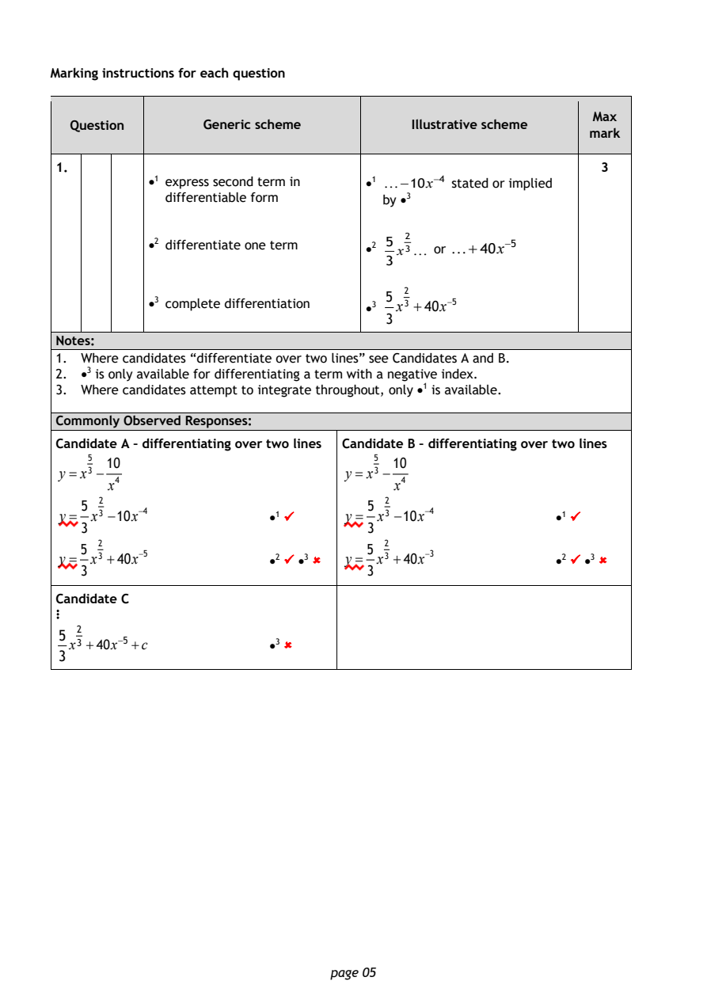
Selectable page text
Marking instructions for each question
Max
Question Generic scheme Illustrative scheme
mark
1. 3
•1 express second term in •1 −10x⁻⁴ stated or implied
differentiable form by •³
•2 differentiate one term •2 5 x ² ³ or +40x⁻⁵
3
5
•3 complete differentiation •3 x³² +40x⁻⁵
3
Notes:
1. Where candidates “differentiate over two lines” see Candidates A and B.
2. •3 is only available for differentiating a term with a negative index.
3. Where candidates attempt to integrate throughout, only •¹ is available.
Commonly Observed Responses:
Candidate A – differentiating over two lines Candidate B – differentiating over two lines
10 10
y = x⁵³ − y = x⁵³ −
x⁴ x⁴
5 5
y = x³² −10x⁻⁴ •1 y = x³² −10x⁻⁴ •1
3 3
5 5
y = x³² +40x⁻⁵ •2 •3 y = x³² +40x⁻³ •2 •3
3 3
Candidate C
5 ²
⋮ x³ +40x⁻⁵ +c •3
3
page 05PDF page 6
Paper 1, Question 2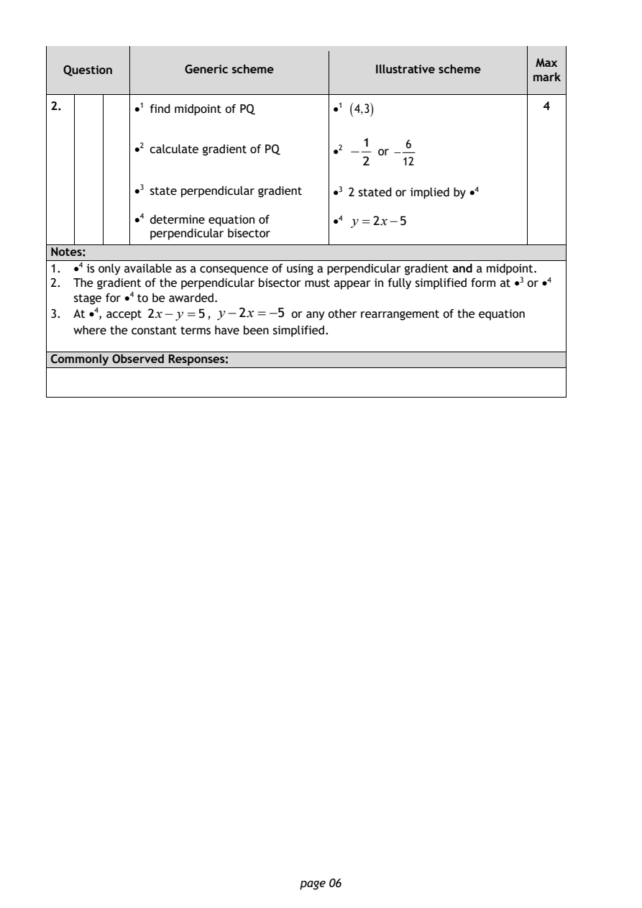
Selectable page text
Max
Question Generic scheme Illustrative scheme
mark
2. •1 find midpoint of PQ •1 (4,3) 4
•2 calculate gradient of PQ •2 − 1 or − 6
2 12
•3 state perpendicular gradient •3 2 stated or implied by •⁴
•4 determine equation of •4 y =2x−5
perpendicular bisector
Notes:
1. •4 is only available as a consequence of using a perpendicular gradient and a midpoint.
2. The gradient of the perpendicular bisector must appear in fully simplified form at •³ or •⁴
stage for •⁴ to be awarded.
3. At •⁴, accept 2x− y =5, y−2x = −5 or any other rearrangement of the equation
where the constant terms have been simplified.
Commonly Observed Responses:
page 06PDF page 7
Paper 1, Question 3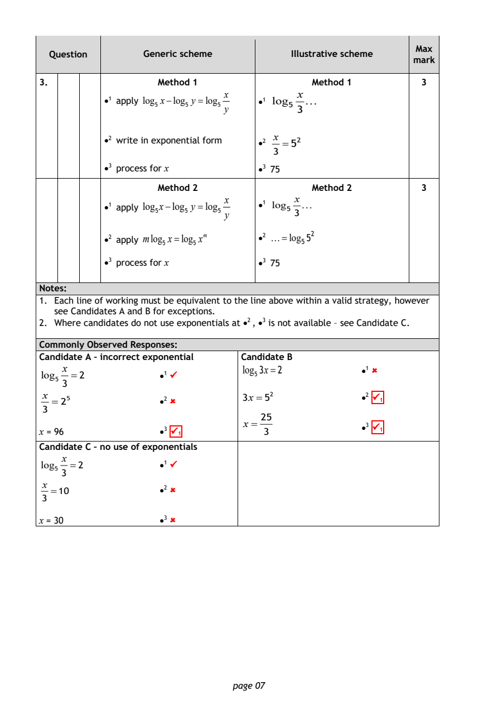
Selectable page text
Max
Question Generic scheme Illustrative scheme
mark
3. Method 1 Method 1 3
x x
•1 apply log₅ x−log₅ y=log₅ •1 log₅
y 3
•2 write in exponential form •2 x =5²
3
•3 process for x •3 75
Method 2 Method 2 3
x x
•1 apply log₅x−log₅ y =log₅ •1 log₅
y 3
•2 apply mlog₅ x=log₅ x^{m} •2 =log₅5²
•3 process for x •3 75
Notes:
1. Each line of working must be equivalent to the line above within a valid strategy, however
see Candidates A and B for exceptions.
2. Where candidates do not use exponentials at •² , •3 is not available – see Candidate C.
Commonly Observed Responses:
Candidate A – incorrect exponential Candidate B
x log₅3x=2 •1
log₅ =2 •1
3
x
= 2⁵ •2
3x =5² •2
1
3
25
x =
•3
x = 96 •3 3 1
1
Candidate C – no use of exponentials
x
log₅ =2 •1
3
x
=10 •2
3
x = 30 •3
page 07PDF page 8
Paper 1, Question 4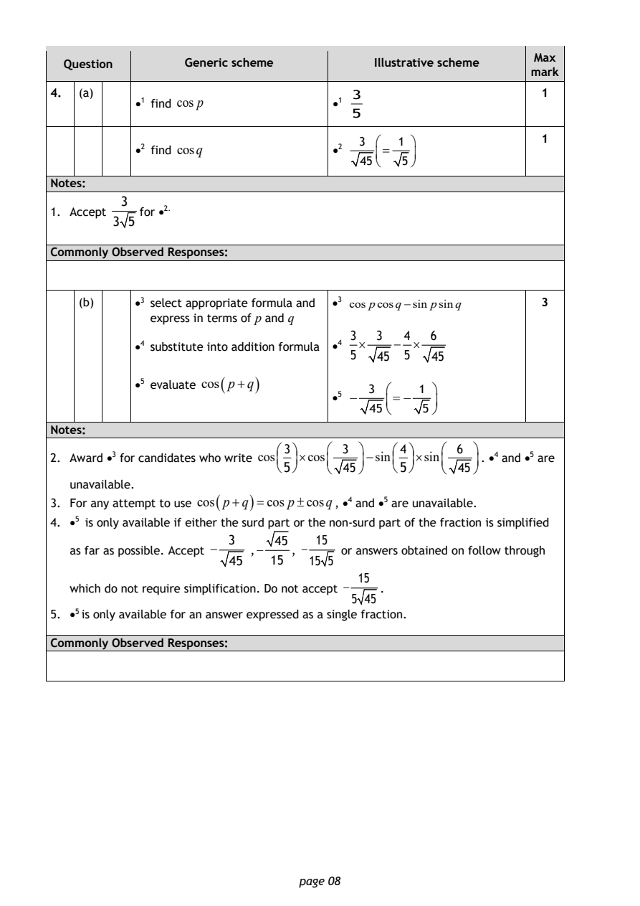
Selectable page text
Max
Question Generic scheme Illustrative scheme
mark
4. (a) 3 1
•1 find cos p •1
5
3 1 1
•2 find cosq •2 =
45 5
Notes:
3
1. Accept for •²^{.}
3 5
Commonly Observed Responses:
(b) •3 select appropriate formula and •3 cos pcosq−sin psinq 3
express in terms of p and q
3 3 4 6
•4 substitute into addition formula •⁴ × − ×
5 45 5 45
•5 evaluate cos ( p+q )
3 1
•5 −
=−
45 5
Notes:
3 3 4 6
2. Award •³ for candidates who write cos ×cos −sin ×sin . •4 and •⁵ are
5 45 5 45
unavailable.
3. For any attempt to use cos ( p+q )=cos p±cosq, •⁴ and •⁵ are unavailable.
4. •⁵ is only available if either the surd part or the non-surd part of the fraction is simplified
3 45 15
as far as possible. Accept − ,− , − or answers obtained on follow through
45 15 15 5
15
which do not require simplification. Do not accept − .
5 45
5. •⁵ is only available for an answer expressed as a single fraction.
Commonly Observed Responses:
page 08PDF page 9
Paper 1, Question 5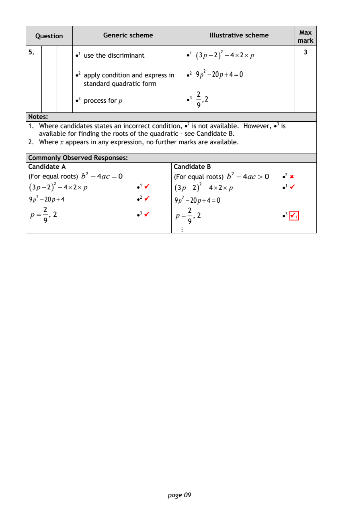
Selectable page text
Max
Question Generic scheme Illustrative scheme
mark
5. •1 use the discriminant •1 ( 3p−2 ) ² −4×2× p 3
•2 apply condition and express in •2 9p² −20p+4=0
standard quadratic form
2
•3 process for p •3 ,2
9
Notes:
1. Where candidates states an incorrect condition, •² is not available. However, •³ is
available for finding the roots of the quadratic - see Candidate B.
2. Where x appears in any expression, no further marks are available.
Commonly Observed Responses:
Candidate A Candidate B
(For equal roots) b² −4ac = 0 (For equal roots) b² −4ac > 0 •2
( 3p−2 ) ² −4×2× p •1 ( 3p−2 ) ² −4×2× p •1
9p²−20p+4 •2 9p²−20p+4=0
2 2
p = , 2 •3 p = , 2 •3
1
9 9
⋮
page 09PDF page 10
Paper 1, Question 6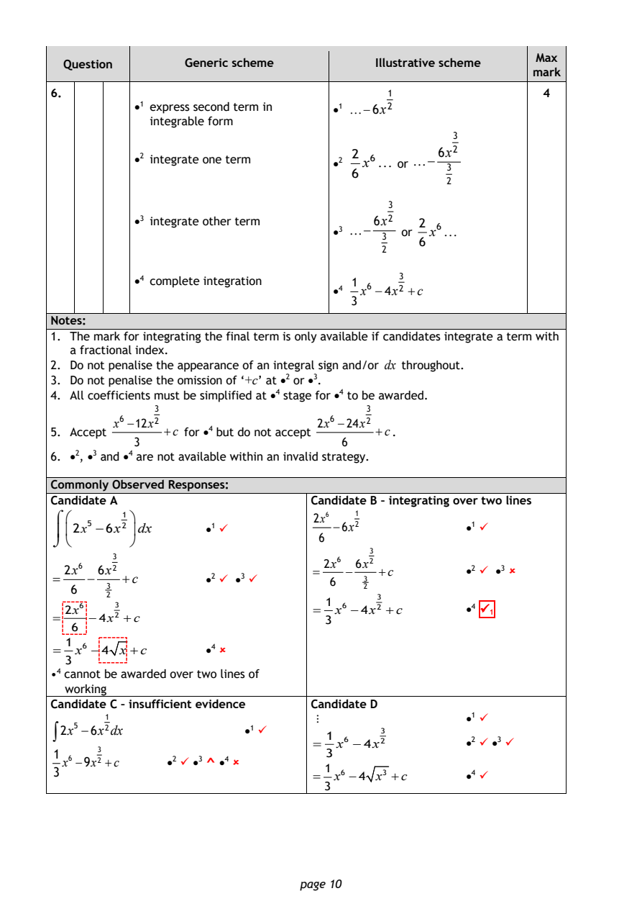
Selectable page text
Max
Question Generic scheme Illustrative scheme
mark
6. 1 4
•1 express second term in •1 −6x²
integrable form
3
2 6x²
•2 integrate one term •2 x⁶ or −
3
6
2
3
•3 integrate other term 6x² 2
•3 −
3
or x⁶
6
2
•4 complete integration 1 3
•4 x⁶ −4x² +c
3
Notes:
1. The mark for integrating the final term is only available if candidates integrate a term with
a fractional index.
2. Do not penalise the appearance of an integral sign and/or dx throughout.
3. Do not penalise the omission of ‘+c’ at •² or •³.
4. All coefficients must be simplified at •⁴ stage for •⁴ to be awarded.
3 3
x⁶ −12x² 2x⁶ −24x²
5. Accept +c for •⁴ but do not accept +c.
3 6
6. •², •3 and •⁴ are not available within an invalid strategy.
Commonly Observed Responses:
Candidate A Candidate B – integrating over two lines
⌠ 2x⁶
2x⁵ −6x²¹ dx •1 −6x²¹ •1
6
⌡
2x⁶ 6x³²
2x⁶ 6x³² = − +c •2 •3
= − +c •2 •3 6 3
6 3 2
2
1
2x⁶ = x⁶ −4x³² +c •4
= −4x³² +c
3
1
6
1
= x⁶ −4 x +c •4
3
•4 cannot be awarded over two lines of
working
Candidate C – insufficient evidence Candidate D
•1
∫2x⁵ −6x²¹dx •1
1
= ⋮ x⁶ −4x³² •2 •3
1 3
x⁶ −9x³² +c •2 •3 ^ •4
1
3 = x⁶ −4 x³ +c •4
3
page 10PDF page 11
Paper 1, Question 7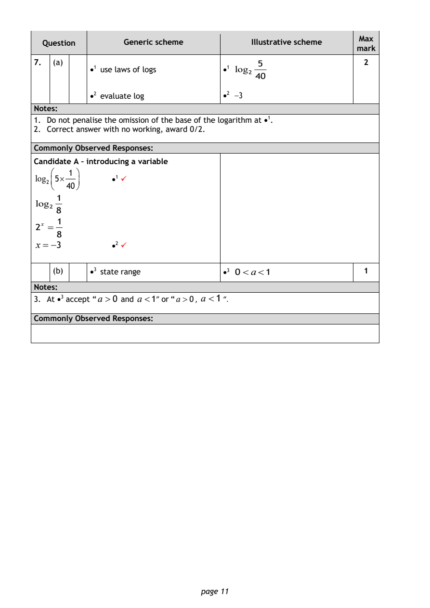
Selectable page text
Max
Question Generic scheme Illustrative scheme
mark
7. (a) 5 2
•1 use laws of logs •1 log₂
40
•2 evaluate log •2 −3
Notes:
1. Do not penalise the omission of the base of the logarithm at •¹.
2. Correct answer with no working, award 0/2.
Commonly Observed Responses:
Candidate A – introducing a variable
1
log₂5× •1
40
1
log₂
8
1
2^{x} =
8
x = −3 •2
(b) •3 state range •3 0 < a<1 1
Notes:
3. At •³ accept “a >0 and a <1” or “a >0, a <1 “.
Commonly Observed Responses:
page 11PDF page 12
Paper 1, Question 8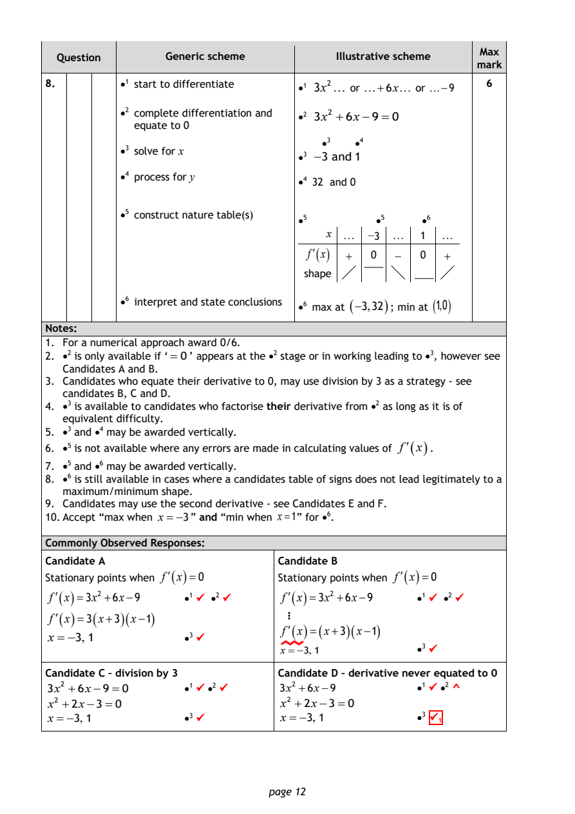
Selectable page text
Max
Question Generic scheme Illustrative scheme
mark
8. •1 start to differentiate •1 3x² or +6x or −9 6
•2 complete differentiation and •2 3x² +6x−9 = 0
equate to 0
•3 •4
•3 solve for x
•3 −3 and1
•4 process for y
•4 32 and 0
•5 construct nature table(s)
•5 •5 •6
x … −3 … 1 …
f′(
x
)
+ 0 − 0 +
shape
•6 interpret and state conclusions
•6 max at
(−3,32 )
; min at
(1,0)
Notes:
1. For a numerical approach award 0/6.
2. •² is only available if ‘= 0’ appears at the •² stage or in working leading to •³, however see
Candidates A and B.
3. Candidates who equate their derivative to 0, may use division by 3 as a strategy - see
candidates B, C and D.
4. •³ is available to candidates who factorise their derivative from •² as long as it is of
equivalent difficulty.
5. •³ and •⁴ may be awarded vertically.
6. •⁵ is not available where any errors are made in calculating values of
f′(
x
)
.
7. •⁵ and •⁶ may be awarded vertically.
8. •⁶ is still available in cases where a candidates table of signs does not lead legitimately to a
maximum/minimum shape.
9. Candidates may use the second derivative - see Candidates E and F.
10. Accept “max when x =−3” and “min when x=1” for •⁶.
Commonly Observed Responses:
Candidate A Candidate B
Stationary points when
f′(
x
)=0
Stationary points when
f′(
x
)=0
f′( x )=3x² +6x−9 •1 •2 f′( x )=3x² +6x−9 •1 •2
f′( x )=3 ( x+3 )( x−1 )
f′( x )=( x+3 )( x−1 )
x = −3, 1 •3 ⋮
x=−3,1 •3
Candidate C – division by 3 Candidate D – derivative never equated to 0
3x² +6x−9= 0 •1 •2 3x² +6x−9 •1 •2 ^
x² +2x−3=0 x² +2x−3=0
x = −3, 1 •3 x = −3, 1 •3
1
page 12PDF page 13
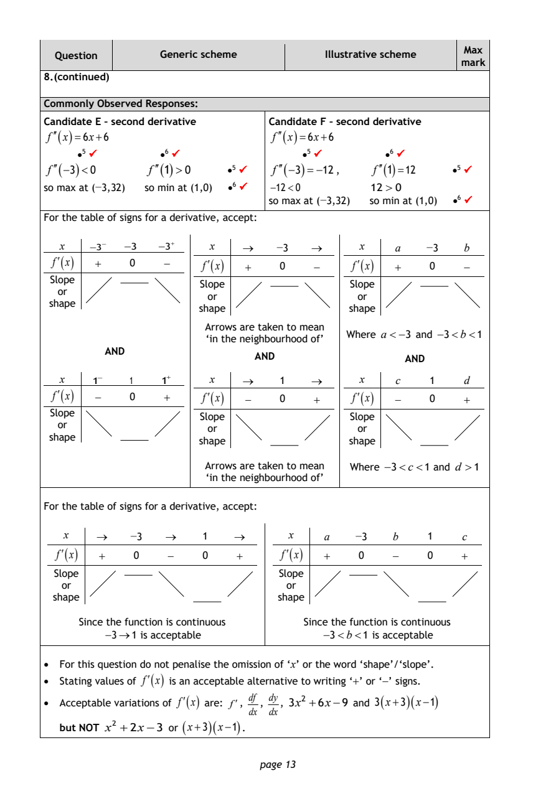
Selectable page text
Max
Question Generic scheme Illustrative scheme
mark
8.(continued)
Commonly Observed Responses:
Candidate E – second derivative Candidate F – second derivative
f′′(
x
)=6x+6 f′′(
x
)=6x+6
•5 •6 •5 •6
f′′(−3 )<0 f′′(1)>0
•5
f′′(−3 )=−12, f′′(1)=12
•5
so max at (−3,32) so min at (1,0) •6 −12<0 12 >0
so max at (−3,32) so min at (1,0) •6
For the table of signs for a derivative, accept:
x −3⁻ −3 −3⁺ x → −3 → x a −3 b
f′(
x
)
+ 0 − f′( x ) + 0 − f′( x ) + 0 −
Slope
Slope Slope
or
or or
shape
shape shape
Arrows are taken to mean
Where a<−3 and −3<b<1
‘in the neighbourhood of’
AND
AND AND
x 1⁻ 1 1⁺ x → 1 → x c 1 d
f′( x ) − 0 + f′( x ) − 0 + f′( x ) − 0 +
Slope
Slope Slope
or
or or
shape
shape shape
Arrows are taken to mean Where −3<c<1 and d >1
‘in the neighbourhood of’
For the table of signs for a derivative, accept:
x → −3 → 1 → x a −3 b 1 c
f′(
x
)
+ 0 − 0 +
f′(
x
)
+ 0 − 0 +
Slope Slope
or or
shape shape
Since the function is continuous Since the function is continuous
−3→1 is acceptable −3<b<1 is acceptable
• For this question do not penalise the omission of ‘x’ or the word ‘shape’/‘slope’.
• Stating values of
f′(
x
)
is an acceptable alternative to writing ‘+’ or ‘−’ signs.
• Acceptable variations of f′( x ) are: f′, df , dy , 3x² +6x−9 and 3 ( x+3 )( x−1 )
dx dx
but NOT x² +2x−3 or ( x+3 )( x−1 ) .
page 13PDF page 14
Paper 1, Question 9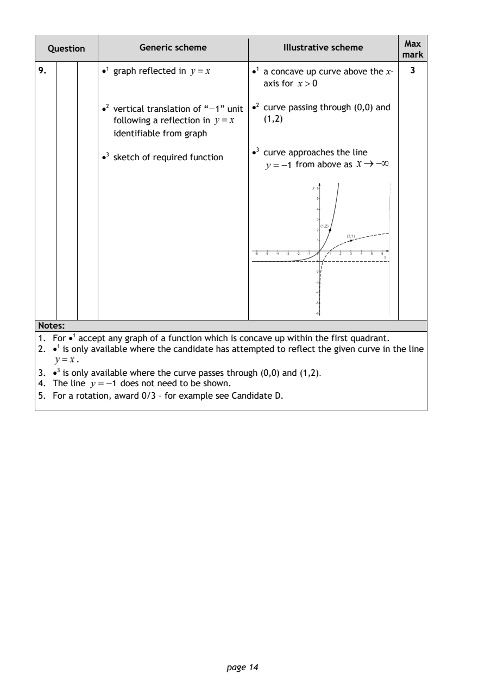
Selectable page text
Max
Question Generic scheme Illustrative scheme
mark
9. •1 graph reflected in y = x •1 a concave up curve above the x- 3
axis for x>0
•2 vertical translation of “−1” unit •² curve passing through (0,0) and
following a reflection in y = x (1,2)
identifiable from graph
•3 curve approaches the lin
•3 sketch of required function
x^{e}→−∞
y =−1 from above as
Notes:
1. For •¹ accept any graph of a function which is concave up within the first quadrant.
2. •¹ is only available where the candidate has attempted to reflect the given curve in the line
y = x.
3. •³ is only available where the curve passes through (0,0) and (1,2).
4. The line y =−1 does not need to be shown.
5. For a rotation, award 0/3 – for example see Candidate D.
page 14PDF page 15
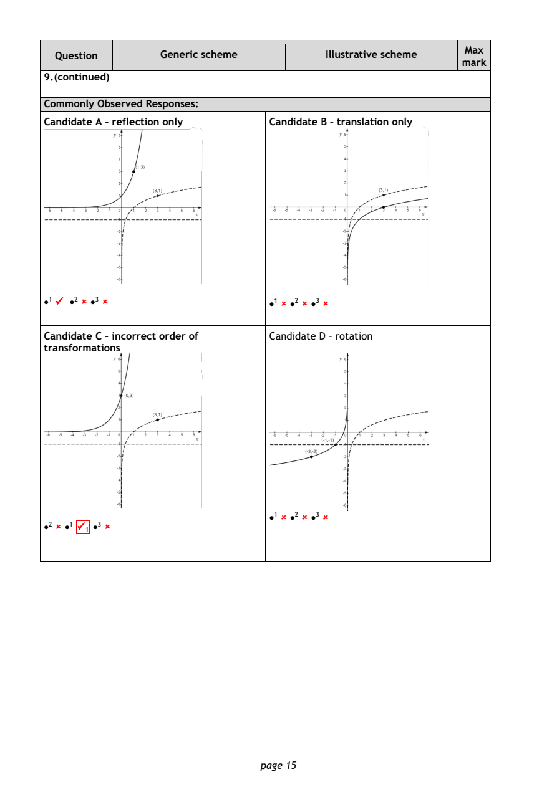
Selectable page text
Max
Question Generic scheme Illustrative scheme
mark
9.(continued)
Commonly Observed Responses:
Candidate A – reflection only Candidate B – translation only
•1 •2 •3 •1 •2 •3
Candidate C – incorrect order of Candidate D – rotation
transformations
•1 •2 •3
•2 •1
1
•3
page 15PDF page 16
Paper 1, Question 10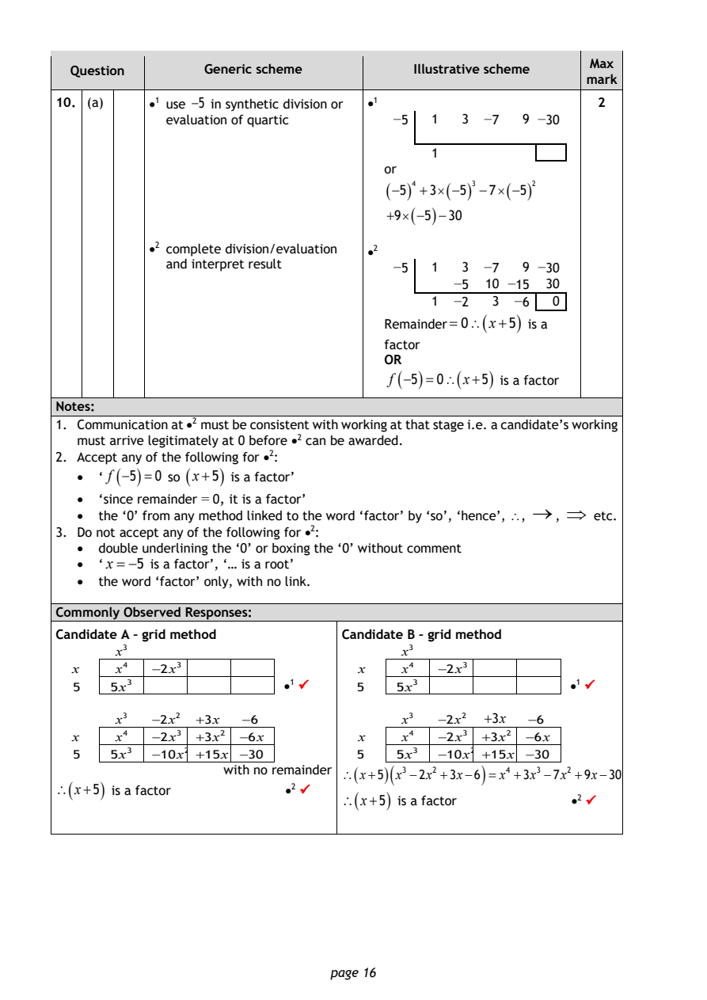
Selectable page text
Max
Question Generic scheme Illustrative scheme
mark
10. (a) •1 use −5 in synthetic division or •1 2
evaluation of quartic −5 1 3 −7 9 −30
1
or
(−5 )
⁴
+3×(−5 )
³
−7×(−5 )
²
+9×(−5 )−30
•2 complete division/evaluation •2
and interpret result −5 1 3 −7 9 −30
−5 10 −15 30
1 −2 3 −6 0
Remainder=0∴ ( x+5 ) is a
factor
OR
f (−5 )=0∴ ( x+5 ) is a factor
Notes:
1. Communication at •² must be consistent with working at that stage i.e. a candidate’s working
must arrive legitimately at 0 before •² can be awarded.
2. Accept any of the following for •²:
• ‘ f (−5 )=0 so ( x+5 ) is a factor’
• ‘since remainder = 0, it is a factor’
→ ⇒
• the ‘0’ from any method linked to the word ‘factor’ by ‘so’, ‘hence’, ∴, , etc.
3. Do not accept any of the following for •²:
• double underlining the ‘0’ or boxing the ‘0’ without comment
• ‘x =−5 is a factor’, ‘… is a root’
• the word ‘factor’ only, with no link.
Commonly Observed Responses:
Candidate A – grid method Candidate B – grid method
x³ x³
x x⁴ −2x³ x x⁴ −2x³
5 5x³ •1 5 5x³ •1
x³ −2x² +3x −6 x³ −2x² +3x −6
x x⁴ −2x³ +3x² −6x x x⁴ −2x³ +3x² −6x
5 5x³ −10x² +15x −30 5 5x³ −10x² +15x −30
with no remainder ∴( x+5 )( x³−2x² +3x−6 ) = x⁴ +3x³−7x² +9x−30
∴( x+5 ) is a factor •2
∴( x+5 ) is a factor •2
page 16PDF page 17
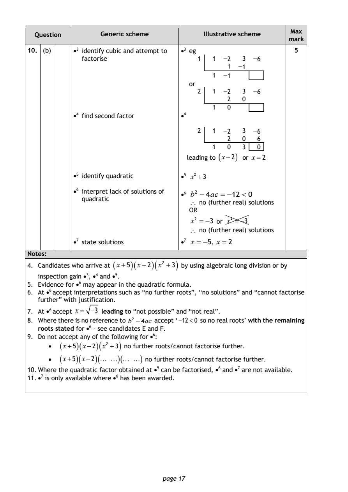
Selectable page text
Max
Question Generic scheme Illustrative scheme
mark
10. (b) •3 identify cubic and attempt to •3 eg 5
factorise 1 1 −2 3 −6
1 −1
1 −1
or
2 1 −2 3 −6
2 0
1 0
•4 find second factor •4
2 1 −2 3 −6
2 0 6
1 0 3 0
leading to ( x−2 ) or x=2
•5 identify quadratic •5 x² +3
•6 interpret lack of solutions of
•6 b² −4ac = −12 < 0
quadratic
∴ no (further real) solutions
OR
x² = −3 or x² =−3
∴ no (further real) solutions
•7 state solutions •7 x = −5, x = 2
Notes:
4. Candidates who arrive at ( x+5 )( x−2 )( x² +3 ) by using algebraic long division or by
inspection gain •³, •4 and •⁵.
5. Evidence for •⁶ may appear in the quadratic formula.
6. At •⁶ accept interpretations such as “no further roots”, “no solutions” and “cannot factorise
further” with justification.
7. At •⁶ accept
x= −3
leading to “not possible” and “not real”.
8. Where there is no reference to b² −4ac accept ‘−12<0 so no real roots’ with the remaining
roots stated for •⁶ - see candidates E and F.
9. Do not accept any of the following for •⁶:
• ( x+5 )( x−2 )( x² +3 ) no further roots/cannot factorise further.
• ( x+5 )( x−2 )( )( ) no further roots/cannot factorise further.
10. Where the quadratic factor obtained at •⁵ can be factorised, •⁶ and •⁷ are not available.
11. •⁷ is only available where •⁶ has been awarded.
page 17PDF page 18
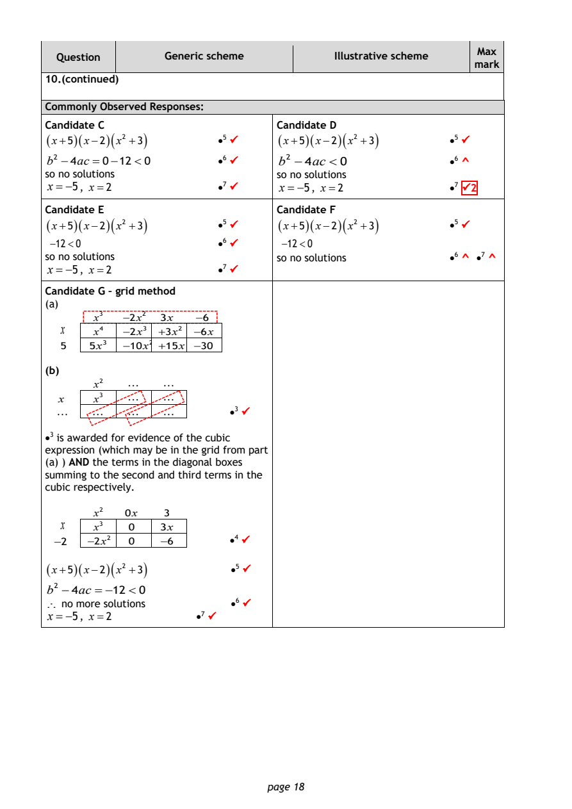
Selectable page text
Max
Question Generic scheme Illustrative scheme
mark
10.(continued)
Commonly Observed Responses:
Candidate C Candidate D
( x+5 )( x−2 )( x² +3 ) •5 ( x+5 )( x−2 )( x² +3 ) •5
b² −4ac =0−12<0 •6 b² −4ac < 0 •6 ^
so no solutions so no solutions
x =−5, x=2 •7 x =−5, x=2 •7 2
Candidate E Candidate F
( x+5 )( x−2 )( x² +3 ) •5 ( x+5 )( x−2 )( x² +3 ) •5
−12<0 •6 −12<0
so no solutions so no solutions •6 ^ •7 ^
x =−5, x=2 •7
Candidate G – grid method
(a)
x³ −2x² 3x −6
x
x⁴ −2x³ +3x² −6x
5 5x³ −10x² +15x −30
(b)
x²
x x³
•3
•3 is awarded for evidence of the cubic
expression (which may be in the grid from part
(a) ) AND the terms in the diagonal boxes
summing to the second and third terms in the
cubic respectively.
x² 0x 3
x
x³ 0 3x
−2 −2x² 0 −6 •4
( x+5 )( x−2 )( x² +3 ) •5
b² −4ac = −12< 0
∴ no more solutions •6
x =−5, x=2 •7
page 18PDF page 19
Paper 1, Question 11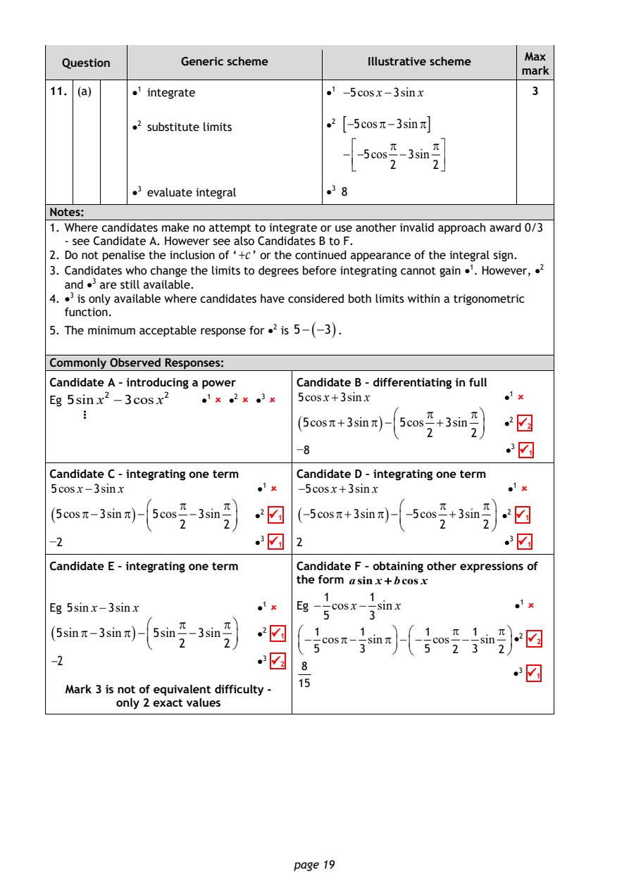
Selectable page text
Max
Question Generic scheme Illustrative scheme
mark
11. (a) •1 integrate •1 −5cosx−3sinx 3
•2 substitute limits •2
[−5cosπ−3sinπ]
π π
−
−5cos −3sin
2 2
•3 evaluate integral •3 8
Notes:
1. Where candidates make no attempt to integrate or use another invalid approach award 0/3
- see Candidate A. However see also didates B to F.
2. Do not penalise the inclusion of ‘ +c’ ^{C}o^{a}r ⁿthe continued appearance of the integral sign.
3. Candidates who change the limits to degrees before integrating cannot gain •¹. However, •²
and •³ are still available.
4. •³ is only available where candidates have considered both limits within a trigonometric
function.
5. The minimum acceptable response for •² is
5−(−3 )
.
Commonly Observed Responses:
Candidate A – introducing a power Candidate B – differentiating in full
Eg 5sin x² −3cosx² •1 •2 •3 5cosx+3sinx •1
π π
( 5cosπ+3sinπ)− 5cos +3sin •2
2
2 2
⋮
−8 •3
1
Candidate C – integrating one term Candidate D – integrating one term
5cosx−3sinx •1 −5cosx+3sinx •1
π π π π ₂
( 5cosπ−3sinπ)− 5cos −3sin •2 (−5cosπ+3sinπ)− −5cos +3sin •
1 1
2 2 2 2
−2 •3 2 •3
1 1
Candidate E – integrating one term Candidate F – obtaining other expressions of
the form asinx+bcosx
1 1
Eg 5sinx−3sinx •1 Eg − cosx− sinx •1
5 3
π π
( 5sinπ−3sinπ)− 5sin −3sin •2 1 1 1 π 1 π ₂
2 2 1 − cosπ− sinπ − − cos − sin • 2
5 3 5 2 3 2
−2 •3
2 8
•3
1
15
Mark 3 is not of equivalent difficulty -
only 2 exact values
page 19PDF page 20
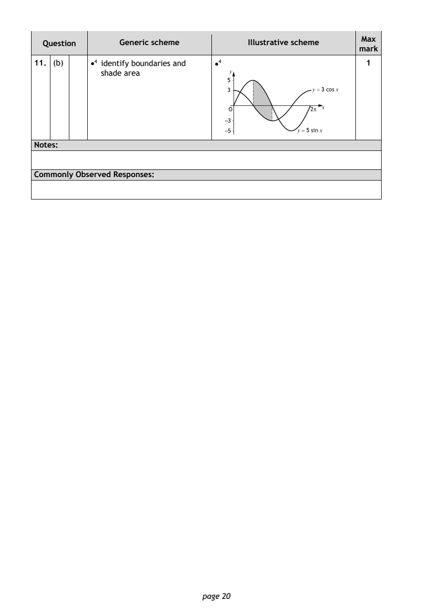
Selectable page text
Max
Question Generic scheme Illustrative scheme
mark
11. (b) •4 identify boundaries and •4 1
shade area
Notes:
Commonly Observed Responses:
page 20PDF page 21
Paper 1, Question 12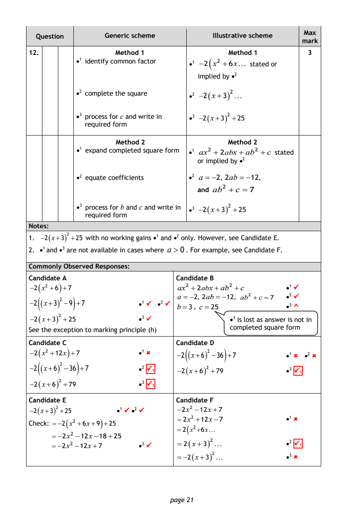
Selectable page text
Max
Question Generic scheme Illustrative scheme
mark
12. Method 1 Method 1 3
•1 identify common factor •1 −2 ( x² +6x stated or
implied by •²
•2 complete the square •2 −2 ( x+3 ) ²
•3 process for c and write in •3 −2 ( x+3 ) ² +25
required form
Method 2 Method 2
•1 expand completed square form •1 ax² +2abx+ab² +c stated
or implied by •²
•2 equate coefficients •2 a = −2, 2ab = −12,
and ab² +c = 7
•3 process for b and c and write in •3 −2 ( x+3 ) ² +25
required form
Notes:
1. −2 ( x+3 ) ² +25 with no working gains •¹ and •² only. However, see Candidate E.
2. •¹ and •³ are not available in cases where a > 0. For example, see Candidate F.
Commonly Observed Responses:
Candidate A Candidate B
−2 ( x² +6 ) +7 ax² +2abx+ab² +c •1
( ) a = −2, 2ab = −12, ab² +c =7 •2
−2 ( x+3 ) ² −9 +7 •1 •2
b=3, c =25 •3 ^
−2 ( x+3 ) ² +25 •3 •3 is lost as answer is not in
completed square form
See the exception to marking principle (h)
Candidate C Candidate D
−2 ( x² +12x ) +7 •1 −2 ( ( x+6 ) ² −36 ) +7 •1 •2
( )
−2 ( x+6 ) ² −36 +7 •2 1 −2 ( x+6 ) ² +79 •3 1
−2 ( x+6 ) ² +79 •3
1
Candidate E Candidate F
−2 ( x+3 ) ² +25 •1 •2 −2x² −12x+7
( ) =2x² +12x−7 •1
Check: =−2 x² +6x+9 +25
(
=2 x²+6x
= −2x² −12x−18+25
=−2x² −12x+7 •3 =2 (x+3 ) ² •2 1
=−2 ( x+3 ) ² •3
page 21PDF page 22
Paper 1, Question 13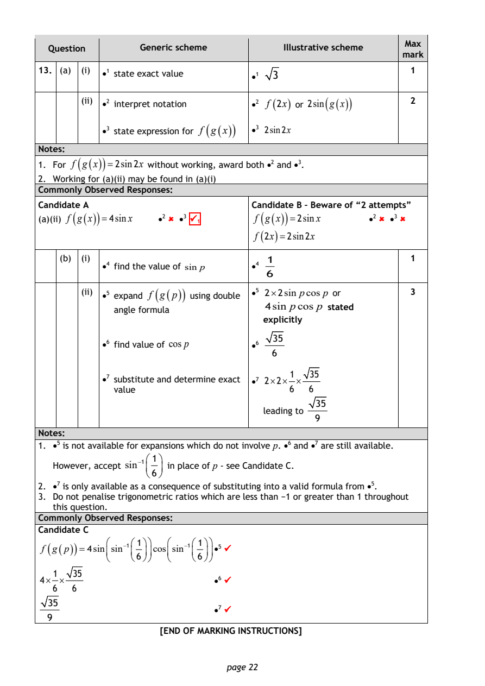
Selectable page text
Max
Question Generic scheme Illustrative scheme
mark
13. (a) (i) •1 state exact value •1 3 1
(ii) •2 interpret notation •2 f ( 2x ) or 2sin ( g ( x )) 2
•3 state expression for f ( g ( x )) •3 2sin2x
Notes:
1. For f ( g ( x )) =2sin2x without working, award both •² and •³.
2. Working for (a)(ii) may be found in (a)(i)
Commonly Observed Responses:
Candidate A Candidate B – Beware of “2 attempts”
(a)(ii) f ( g ( x )) =4sinx •2 •3 f ( g ( x )) =2sinx •2 •3
1
f
(
2x
)=2sin2x
(b) (i) 1 1
•4 find the value of sin p •4
6
(ii) •5 expand f ( g ( p )) using double •5 2×2sin pcos p or 3
4sin pcos p stated
angle formula
explicitly
35
•6 find value of cos p •6
6
1 35
•7 substitute and determine exact •7 2×2× ×
value 6 6
35
leading to
9
Notes:
1. •⁵ is not available for expansions which do not involve p. •⁶ and •⁷ are still available.
1
However, accept sin⁻¹ in place of p - see Candidate C.
6
2. •⁷ is only available as a consequence of substituting into a valid formula from •⁵.
3. Do not penalise trigonometric ratios which are less than −1 or greater than 1 throughout
this question.
Commonly Observed Responses:
Candidate C
1 1
f ( g ( p )) =4sinsin⁻¹ cossin⁻¹ •5
6 6
1 35
4× × •6
6 6
35
•7
9
[END OF MARKING INSTRUCTIONS]
page 22